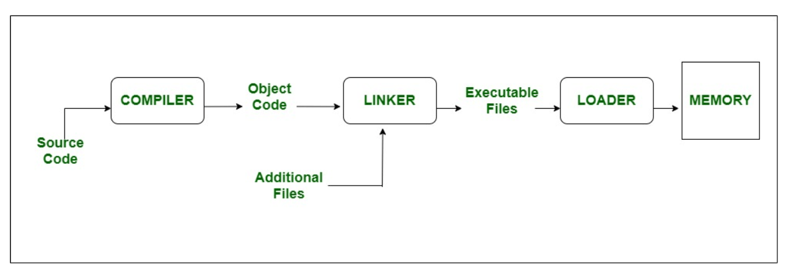
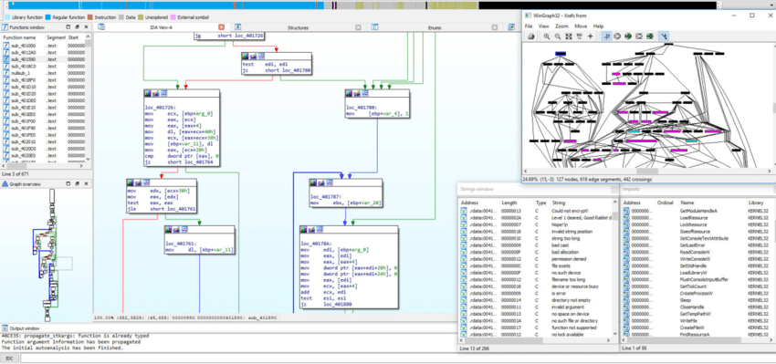
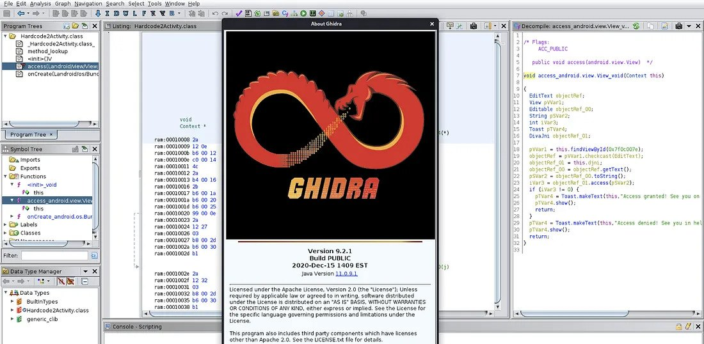
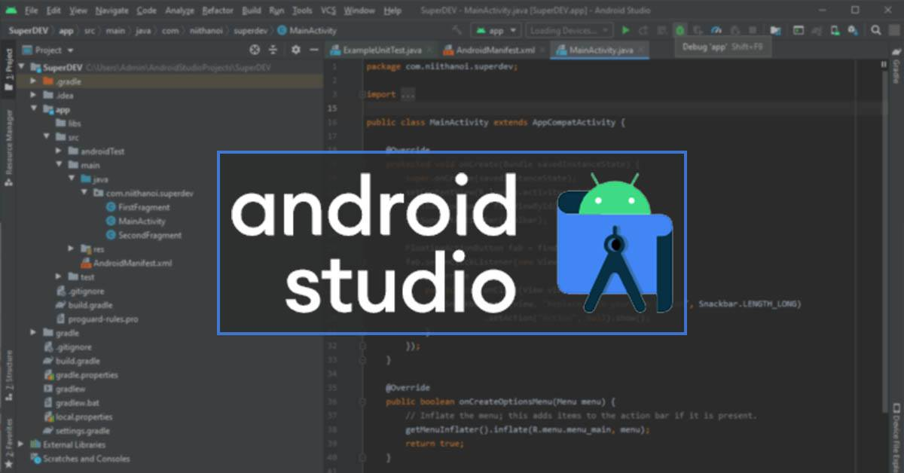

Reverse engineering phần mềm là quá trình phân tích mã nguồn của một
phần mềm để tìm hiểu về cấu trúc, chức năng và cách hoạt động của nó.
Điều này có thể được thực hiện để:
- Tìm hiểu về cách hoạt
động của một phần mềm: Điều này có thể hữu ích cho các nhà phát triển
phần mềm, những người muốn sửa lỗi hoặc cải thiện phần mềm.
- Sao chép hoặc sản xuất một phần mềm tương tự: Điều này có
thể được thực hiện để tiết kiệm chi phí hoặc để tạo ra một phiên bản cải
tiến của phần mềm. Tuy nhiên, việc sao chép phần mềm có bản quyền mà
không có sự cho phép của tác giả là bất hợp pháp.
- Phân
tích bảo mật của một phần mềm: Điều này có thể giúp xác định các lỗ hổng
bảo mật có thể bị khai thác bởi tin tặc.
Khái niệm reverse engineering cũng tồn tại trong mảng phần cứng, với ý nghĩa tương tự là phân tích và tái tạo lại phần cứng đó. Tuy nhiên chúng ta sẽ chỉ nói về dịch ngược phần mềm trong bài viết này.
Trước khi tìm hiểu về reverse engineering, bạn đọc cần có hiểu biết về kiến trúc máy tính và assembly, nên tìm hiểu về tập lệnh x86 (định dạng Intel) vì tập lệnh và định dạng này phổ biến. Chúng ta chỉ cần học tới mức hiểu syntax của Assembly (dòng lệnh, if-else, loop,...) là đủ.
Các CPU hiện nay trên thị trường được gắn với một kiến trúc tập lệnh nào
đó. Kiến trúc tập lệnh (Instruction Set Architecture) là tập hợp các kỹ
thuật thiết kế bộ vi xử lý được sử dụng để thực hiện các tập lệnh. Máy
vi tính với CPU khác nhau có thể chia sẻ một tập lệnh phổ biến. Một số
kiến trúc tập lệnh phổ biến:
- x86: Kiến trúc x86 là kiến trúc tập lệnh phổ biến nhất
hiện nay, được sử dụng trong hầu hết các máy tính để bàn, máy tính xách
tay, máy chủ và các thiết bị nhúng. Kiến trúc x86 đã trải qua nhiều lần
cập nhật và mở rộng trong những năm qua, và hiện được hỗ trợ bởi một
loạt các nhà sản xuất bộ xử lý, bao gồm Intel, AMD và VIA. Có 2 định
dạng phổ biến của x86 là Intel và AT&T, 2 cách đọc này khác nhau đôi
chút.
- ARM: Kiến trúc ARM là kiến trúc tập lệnh phổ biến
nhất trong các thiết bị di động, bao gồm điện thoại thông minh, máy tính
bảng và máy tính xách tay. Kiến trúc ARM được thiết kế để tiết kiệm điện
năng và hiệu suất trên mỗi watt, khiến nó trở nên lý tưởng cho các thiết
bị di động.
- MIPS: Kiến trúc MIPS là kiến trúc tập lệnh phổ
biến trong một số thiết bị, bao gồm máy tính để bàn, máy tính xách tay,
máy chủ và các thiết bị nhúng. Kiến trúc MIPS được thiết kế để đơn giản
và hiệu quả, khiến nó trở nên lý tưởng cho các ứng dụng đòi hỏi tài
nguyên thấp.
- PowerPC: Kiến trúc PowerPC là kiến trúc tập
lệnh phổ biến trong các máy chủ và thiết bị nhúng. Kiến trúc PowerPC
được thiết kế để hiệu suất cao, khiến nó trở nên lý tưởng cho các ứng
dụng đòi hỏi nhiều tài nguyên.
- RISC-V: Kiến trúc RISC-V là
một kiến trúc tập lệnh mới đang trở nên phổ biến. Kiến trúc RISC-V là
kiến trúc tập lệnh mở, miễn phí, khiến nó trở nên lý tưởng cho các ứng
dụng yêu cầu chi phí thấp và linh hoạt.
EAX - stores function return values
EBX - base pointer to
the data section
ECX - counter for string and loop operations
EDX - I/O pointer
ESI - source pointer for string operations
EDI - destination pointer for string operations
ESP - stack
pointer
EBP - stack frame base pointer
EIP - pointer to next
instruction to execute - “instruction pointer”
Thông thường, một chương trình có thể được tạo ra bằng 2 cách: Compiling và Interpreting.
Sau quá trình compile source thì còn có 2 bước nữa để chương trình có thể thực thi được là: linker & loader.
Sau khi compile, chúng ta sẽ nhận được file object (.o) chứa source code và thông tin cơ bản về các thư viện (file .h) như là tên các hàm, các kiểu sử dụng. Từ đó có thể kiểm tra lỗi syntax trong source code. Sau đó tại linker thông tin cụ thể các hàm của thư viện sẽ được thêm vào (file .lib,.a). Cuối cùng, khi chương trình được khởi chạy, loader sẽ load output của linker (.exe) vào memory và chương trình bắt đầu.
Đối với các chương trình sử dung thông dịch, quy trình sẽ khác với compiling. Ví dụ, đối với python, bước đầu khi chạy 1 file source code .py, trình thông dịch Python sẽ compile file .py thành dạng bytecode (.pyc). Sau đó, ở bước tiếp theo, PVM (Python Virtual Machine) sẽ interprete bytecode và thực thi chương trình.
Ở Python, có 2 cách để import một thư viện.
Cách 1 là sử dụng từ khoá import (Ex: "import math"), thông tin sơ
lược về thư viện sẽ được thêm ở bước compile thành .pyc. Sau đó khi
thông dịch bytecode, thông tin chi tiết sẽ được đẩy vào memory của
chương trình (giống như ở Compiling nhưng bỏ bước linker, loader sẽ làm
luôn công việc của linker).
Cách 2 là import động (Dynamic
Loading). Khi đó trong lúc thực thi chương trình (loader), nếu cần sử
dụng thư viện nào thì lúc đó mới thêm vào thay vì phải cho biết trước
như cách 1. Để dùng cách 2 này, chúng ta có thể dùng hàm __import__ hay
module importlib.
Sau khi xem nội dung trên, các bạn có thể thấy Compiling đang thiếu hụt
hướng chạy thư viện cùng lúc với program giống như cả 2 cách của
Interpreting. DLL có thể giúp khắc phục điều này. DLL (Dynamic Link
Library) cũng có 2 cách tương ứng 2 cách của Interpreting, đó là:
Load-time dynamic linking (giống C1) và Runtime dynamic linking (giống
C2).
Nếu dùng Load-time dynamic linking, khi compile source code chúng
ta phải đính kèm file thư viện. Còn nếu dùng Runtime dynamic linking,
chúng ta sử dụng các hàm như LoadLibrary hay GetProcAddress.
Bạn
đọc có thể xem qua syntax về DLLMain, exported functions tại:
tutorialspoint
Bên trên chúng ta đã nói về ứng dụng trên Windows, vậy còn bên Unix thì
sao ? Các file thực thi trên Unix & Unix-like được gọi là ELF
(Executable and Linkable Format). Chúng đều có cách xây dựng thông qua
linker, loader giống Windows. Mỗi file ELF sẽ có header chứa magic byte,
endian, kiến trúc 32 hay 64 bit,... Chúng ta có thể xem các thông tin
này qua lệnh
readelf -h filename
File ELF được chia thành các kiểu: ET_NONE, ET_REL, ET_EXEC,
ET_DYN, ET_CORE. Kiểu ET_EXEC là kiểu file thực thi thông thường. ET_REL
là các file .o được tạo ra sau khi compile, cần được linker kết hợp
thành file hoàn chỉnh. Còn ET_DYN là các file shared object, được gắn
vào chương trình bằng dynamic linker.
Các file ET_DYN lại được
chia nhỏ thành 2 kiểu: shared library và PIE. Shared library là các file
.so, đã qua bước linker, tuy nhiên không thể thực thi độc lập mà cần
chương trình khác gọi đến. Còn file PIE (Position Independent
Executable) cũng giống file .so nhưng lại có khả năng thực thi độc lập.
Đồng thời file PIE cũng tăng cường tính bảo mật do khi được chương trình
khác gọi và load vào memory, file này sẽ được cấp vùng nhớ ngẫu nhiên
thay vì nằm trong vùng nhớ của chương trình gọi.
Bạn đọc có thể
xem chi tiết về file ELF ở:
Here
Một vài decompilers đối với một số ngôn ngữ:
- Python: pycdc,
PyDA, dis module (dùng
để lấy bytecode instructions (một dạng opcode được sử dụng cho riêng
intepreter của Python))
- AutoIT:
AutoIT Ripper
- .NET: dnSpy, ILSpy, dotPeek
- Lua: luadec,
unluac
Để lấy thông tin cơ bản về thành phần của 1 file PE, chúng ta có thể sử dụng tool như PE Info.
Với file PE (đa số là file exe), ngoài các tool như trên chúng ta thường sử dụng các công cụ như IDA, GHidra, x64dbg,... nếu chưa biết ngôn ngữ được sử dụng. IDA là một tool nổi tiếng vì có thể disassemble, decompile rất nhiều kiểu file bao gồm file PE. IDA và x64dbg đều hỗ trợ debug với nhiều tính năng cần thiết.

Một số file PE có thể bị packed. Đó là tình trạng source code bị mã hoá, làm rối,... Các công cụ dùng để pack có thể kể tới UPX. Để lấy được code trước khi bị packed bạn đọc có thể xem hướng dẫn tại: Here
Bên cạnh Windows cũng có nền tảng các hệ điều hành thuộc họ Unix, Unix-like. Những hệ điều hành này thay vì chạy file exe thì sử dụng file elf (Executable and Linkable Format). Lí do windows không thể thực thi file elf và ngược lại mặc dù có thể dùng chung kiến trúc x86 là bởi vì không tương thích các thư viện mà hệ điều hành cung cấp.
Để disassemble, decompile loại file này có thể dùng GHidra và IDA. Để debug, chúng ta có thể dùng gdb hay IDA. Mình thường sử dụng gef - bản nâng cấp giao diện của gdb, bạn đọc có thể xem thêm cách debug bằng gef hay gdb tại: StackExchange, LiveOverflow.

Một vài note khi sử dụng gdb:
x/32xb address
info functions
info
breakpoints (delete 1 2 3)
show args / set args
b* main+1
starti
Disassemble / Decompile Tools: JADX, Android Studio, apktool,...
Android Studio cũng được sử dụng để debug được file apk. Tuy nhiên 1 file apk thông thường sẽ chưa bật chế độ debug trong AndroidManifest.xml, chúng ta phải tự làm điều đó.
Chúng ta cần decompile file apk ra các file nhỏ hơn bao gồm AndroidManifest.xml, thêm chuỗi android:debuggable="true", recompile lại các file nhỏ thành 1 file apk, cuối cùng là ký (sign) file apk mới. Mỗi khi thay đổi dữ liệu trong file apk sẽ cần phải ký lại.
Decompile, modify, recompile using apktool:
Here (có thể
sign nhanh hơn dùng cách bên dưới)
Sign apk using Uber Apk Signer:
Here

Trong lúc debug, có thể ngoài file smali chúng ta có thể gặp những file thư viện .so (shared object). Những file này thường được code bằng C/C++ và được compile sẵn, gần như không thể debug trên Android Studio. Chúng có thể so sánh với thư viện liên kết động (DLL) trên Windows. Bạn đọc có thể xem sự khác biệt giữa một vài loại thư viện tại: StackOverflow
Việc debug các file .so riêng biệt sẽ cần tốn công hơn. Chúng ta sử dụng IDA Pro để debug và cần máy root để có thể thực thi file phát server cho IDA kết nối từ xa. Việc thiết lập kết nối giữa IDA và thiết bị sẽ hoàn toàn qua adb (Android Debug Bridge). Chi tiết bạn đọc xem tại: Android AppSec Youtube
Trong lúc dịch ngược và debug, chúng ta cần để ý đến các điểm mấu chốt như: hàm bắt đầu (nếu có), ý nghĩa tên các hàm (nếu có), logic code (AI như chatgpt cũng có thể hỗ trợ rất tốt trong việc đọc hiểu code decompiled hay disassembled và giải thích ý nghĩa đoạn code), cài đặt breakpoints như thế nào, tại các breakpoint thì xem và sửa các giá trị trên thanh ghi và các biến trong function như thế nào, chọn và xử lí đúng thread trong ứng dụng multi thread,...